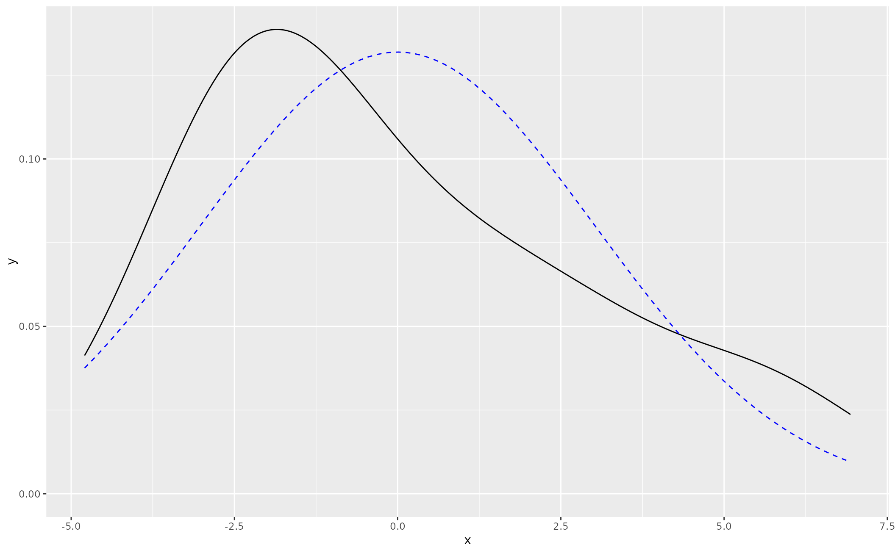

rd_plot() provides a visual diagnostic of the normality
assumption of the linear model. Provided an OLS model fit by lm() in
base R, the function extracts the residuals of the model and creates
a density plot of those residuals (solid black line) against a standard
normal distribution with a mean of 0 and a standard deviation matching the
standard deviation of the residuals from the model. The function may be used
for diagnostic purposes.
Value
rd_plot() returns a density plot a ggplot2 object. A
density plot of the actual residuals is a solid black line. A stylized normal
distribution matching the description of the residuals is the blue dashed
line.
Details
The user can always add ggplot2 elements on top of this for
greater legibility/clarity. For example, density plots can be finicky about
making observations appear where they don't. Perhaps adjusting the scale
of x ad hoc, after the fact, may be warranted.
The goal of this function is to emphasize that in many real world applications, the normality assumption of the residuals is never held but can often be reasonably approximated upon visual inspection.
Examples
M1 <- lm(mpg ~ hp + disp, data = mtcars)
rd_plot(M1)

rd_plot(M1, linewidth = 1.1)